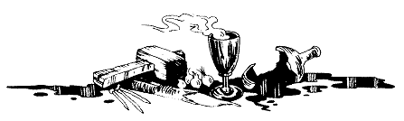

Vous revenez sur vos pas dans le couloir, jusqu'au pied de l'escalier. Le couloir se poursuit plus avant, et vous décidez de le suivre. Un peu plus loin, vous parvenez à une volée de marches. Mais la lumière est si faible que vous ne les voyez qu'à la dernière minute, et vous les dégringolez cul par-dessus tête. Vous vous recevez durement sur le sol, et vous perdez 1 point d'ENDURANCE.
